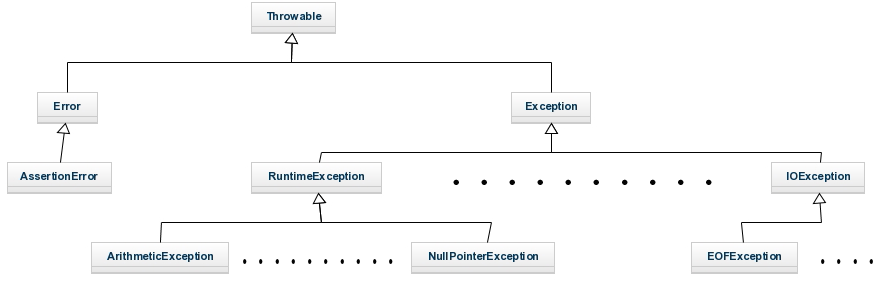

Temario:
- Excepciones
- Ejercicio
Universidad Centroamericana "José Simeón Cañas".
Programación orientada a objetos.
Ciclo 01/19.
En Java los errores en tiempo de ejecución (cuando se esta ejecutando el programa) se denominan excepciones, y esto ocurre cuando se produce un error en alguna de las instrucciones de nuestro programa, como por ejemplo cuando se hace una división entre cero, cuando un objeto es 'null' y no puede serlo, cuando no se abre correctamente un fichero, etc. Cuando se produce una excepción se muestra en la pantalla un mensaje de error y finaliza la ejecución del programa.
Cuando en Java se produce una excepción se crear un objeto de una determina clase (dependiendo del tipo de error que se haya producido), que mantendrá la información sobre el error producido y nos proporcionará los métodos necesarios para obtener dicha información. Estas clases tienen como clase padre la clase Throwable, por tanto se mantiene una jerarquía en las excepciones. A continuación mostramos algunas de las clases para que nos hagamos una idea de la jerarquía que siguen las excepciones, pero existen muchísimas más excepciones que las que mostramos:

try {
// Instrucciones cuando no hay una excepción
} catch (TypeException ex) {
// Instrucciones cuando se produce una excepcion
} finally {
// Instruciones que se ejecutan, tanto si hay como sino hay excepciones
}
Respecto a la estructura "try – catch – finally", se ha de decir que primero se ejecuta el bloque "try", si se produce una excepción se ejecuta el bloque "catch" y por último el bloque "finally". En esta estructura se puede omitir el bloque "catch" o el bloque "finally", pero no ambos.
public class MyClass {
public static void main(String[] args) {
Scanner sc = new Scanner(System.in);
int n;
do{
try{
System.out.print("Introduce un número entero > 0: ");
n = sc.nextInt();
System.out.println("Número introducido: " + n);
}catch(InputMismatchException e){
sc.nextLine();
n = 0;
System.out.println("Debe introducir un número entero " + e.toString());
}
}while(n<=0);
}
}